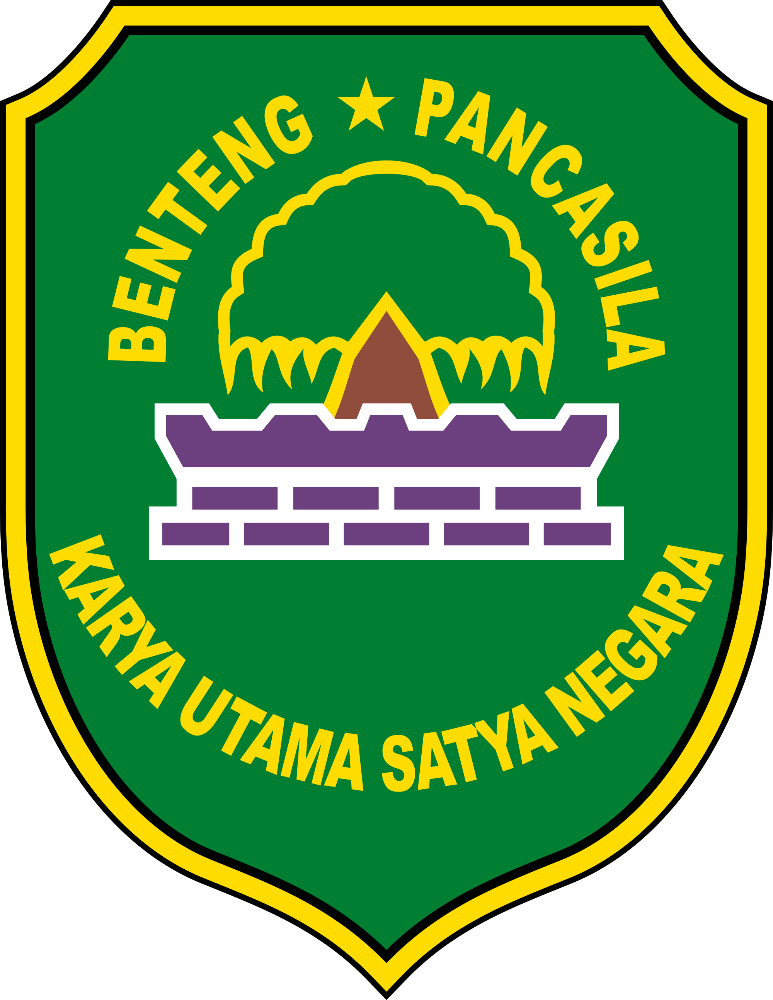

Konfirmasi Pemilihan
Apakah Anda yakin akan memilih kandidat ini?
Pastikan QR code terlihat jelas dan dapat dibaca
Siap memindai...

PEMILIHAN KEPALA DESA SUKAMANDIJAYA
KECAMATAN CIASEM KABUPATEN SUBANG
MASA BAKTI 2026–2036
Apakah Anda yakin akan memilih kandidat ini?
Mencetak Surat Audit...
SURAT AUDIT
PEMILIHAN KEPALA DESA SUKAMANDIJAYA
TPS 1 / Bilik 1
Silakan ambil struk yang keluar dari printer dan masukkan ke kotak audit.
Bilik 1 • Pilkades Sukamandijaya